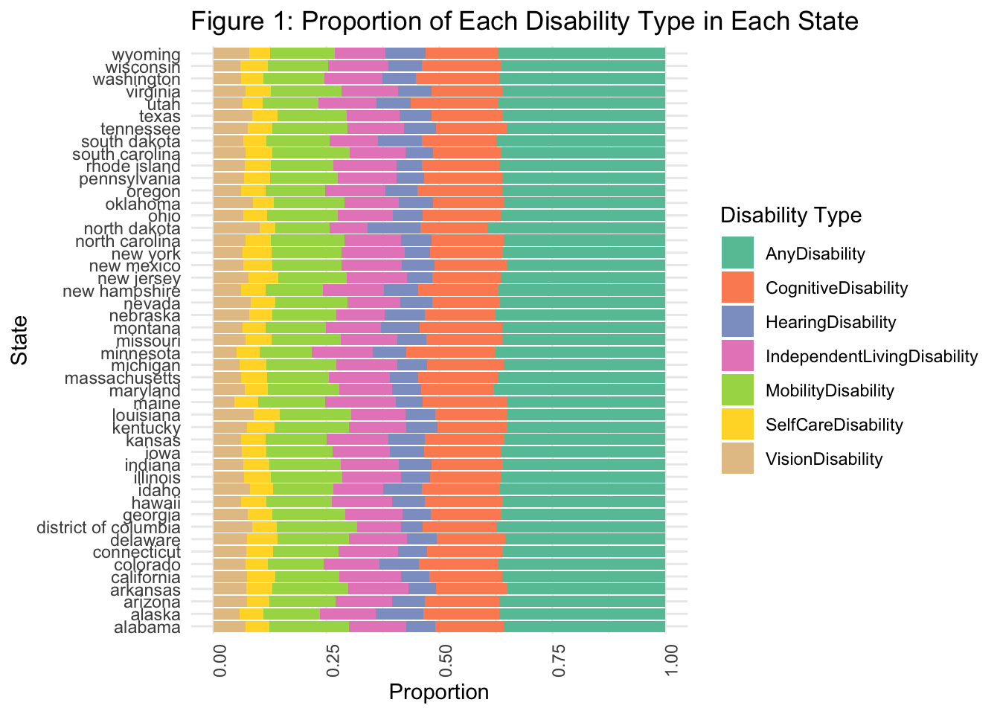
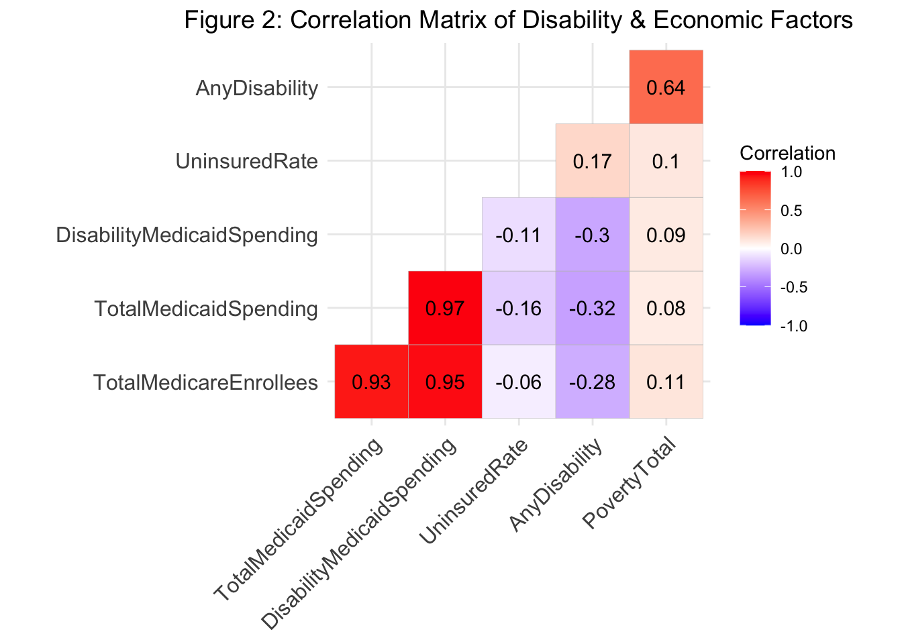
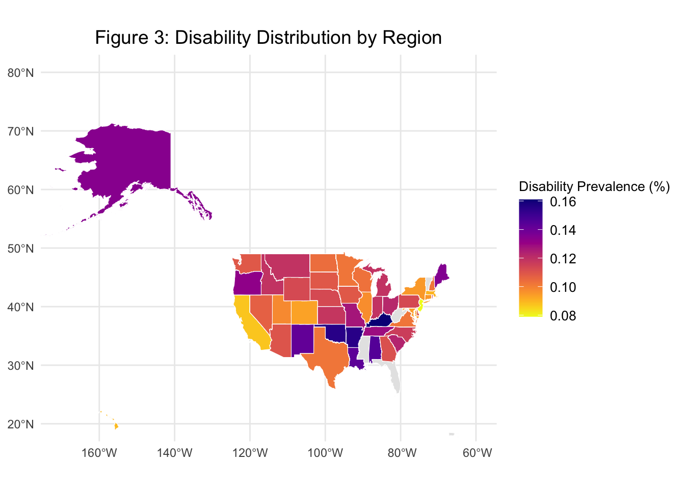
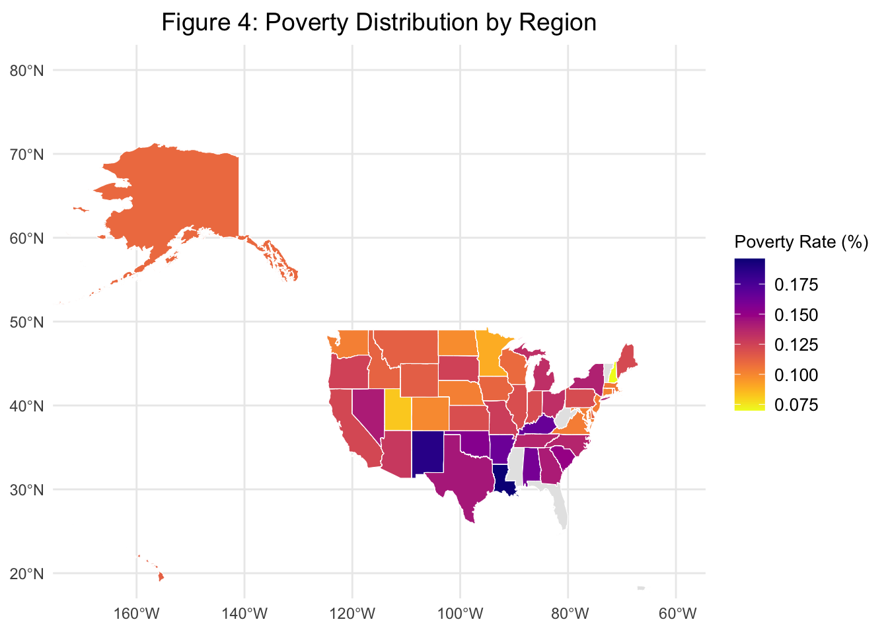
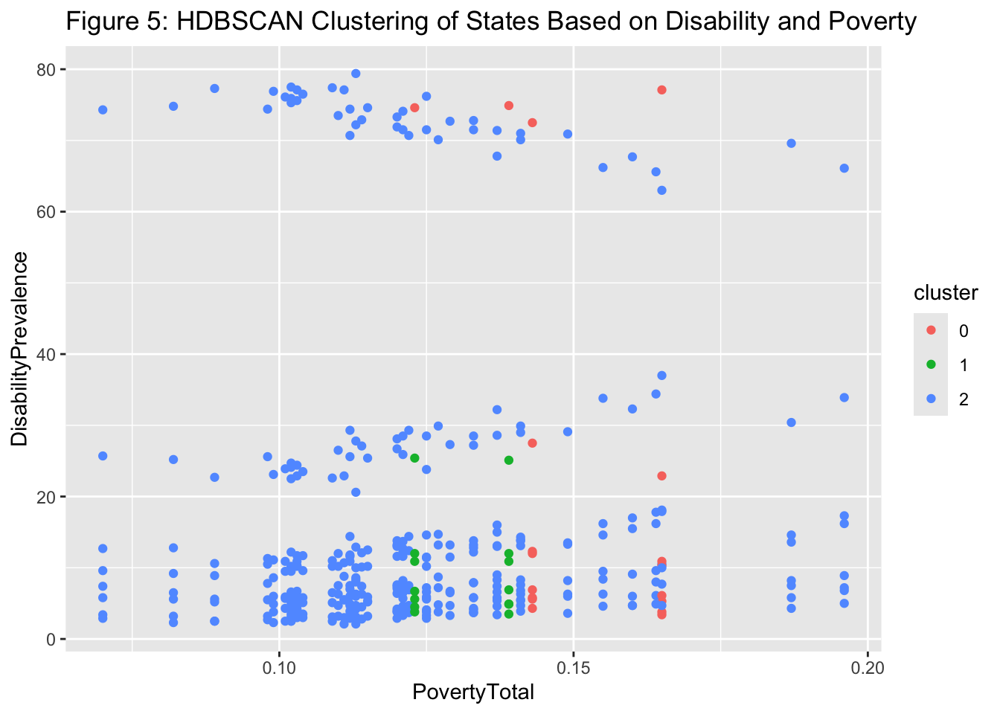

link to GitHub repository: https://github.com/lisazhong13/JSC370-finalproject
downloadable report link: https://github.com/lisazhong13/JSC370-finalproject/blob/main/JSC370_Project.pdf
Disabilities affect millions of individuals across the United States, with significant variation in prevalence from state to state. These disparities are shaped by a range of socioeconomic and demographic factors, including income levels, education attainment, employment status, as well as demographic characteristics such as age, race, and ethnicity. Understanding these variations is critical, as the prevalence of disability can have profound implications for public health and policy.
This project aims to explore the question: “How do socioeconomic indicators and demographic characteristics impact the prevalence of different types of disabilities across U.S. states?” To address this question, I have utilized publicly available data from various reliable sources, integrating information on disability prevalence with key economic and demographic variables. By examining the relationships between these factors, the study seeks to identify the underlying drivers of disability disparities, providing valuable insights that can inform policy decisions, guide resource allocation, and improve support services for individuals with disabilities across diverse communities.
I hypothesize that U.S. states with higher poverty rates, lower levels of healthcare coverage, and greater economic inequality will experience higher prevalence rates of disabilities. In particular, I expect that state-level Medicaid and Medicare spending will have a positive correlation with reported disability rates, while employer-sponsored insurance coverage will be negatively correlated with disability prevalence. Additionally, demographic factors such as age will likely play a significant role in shaping disability patterns, especially considering that Medicare primarily serves older populations.
The primary dataset for this project is sourced from the Centers for Disease Control and Prevention (CDC) Disability and Health Data System (DHDS) through their public API. Given that the API has a 1000-row limit per request, the data was retrieved in chunks by utilizing the limit and offset parameters, and then loaded into R using the httr and readr libraries. The DHDS data contains information on the prevalence and the disabled population in 2021 and 2022 across various states in the U.S.
Due to an API-related issue encountered during the final stages of the report preparation, I was unable to load the dataset directly via the API. As a result, I manually downloaded the dataset from the CDC website and can be found in the data folder. This dataset includes valuable data on disability prevalence and population distribution across states.
To enhance the analysis and address my research questions more
comprehensively, I supplemented the DHDS dataset with additional
socioeconomic and demographic variables. Specifically, I scraped
uninsured rate data from the American Community Survey (ACS) using the
U.S. Census Bureau API. Furthermore, I downloaded various datasets from
the Kaiser Family Foundation (KFF) website, including information on the
poverty rate by age, healthcare access indicators such as health
insurance coverage, hospital counts, Medicaid spending, and additional
disability-related data. In this study, both poverty and disability
variables are expressed as proportions of the population at the state
level. For instance, a value of 0.12 for
DisabilityPrevalence indicates that 12% of the state’s
population reported having a disability. Since Medicare is available
primarily to individuals aged 65+, the variables
MedicareInsuranceCoverage and
TotalMedicareEnrollees serve as proxies for age structure
across states.
These datasets were merged based on state names to ensure consistency. However, some locations in the primary dataset, such as “HHS Region 1-10,” “Puerto Rico,” “Guam,” “U.S. Virgin Islands,” and “United States, DC & Territories,” were excluded from the final merged dataset due to their irrelevance to the state-level analysis.
Since many socioeconomic variables were missing for 2022, I focused primarily on analyzing data from 2021. Data from 2022 were filtered out to ensure consistency in the analysis. I also renamed variables to make them more intuitive and changed some character variables into numerical formats for easier analysis.
Finally, I addressed missing values by removing rows with incomplete data. The final cleaned dataset contained 376 entries and 29 variables.
With this cleaned dataset, I now proceed to an exploratory analysis.
Descriptive statistics and correlation matrices were used to explore
relationships between variables. Geographic visualizations were created
using ggplot2 and sf to display spatial
patterns in disability and socioeconomic factors.
This study employed a combination of statistical modeling techniques to analyze the relationship between disability prevalence and socioeconomic factors across U.S. states. First, an Analysis of Variance (ANOVA) was conducted to determine whether the prevalence of various types of disabilities differed significantly between states. This approach assessed the extent of between-group versus within-group variability in disability prevalence. Next, a series of linear regression models were fitted independently for each disability type. These models included key socioeconomic variables as predictors and were evaluated using standard metrics: R-squared (R²) to quantify the proportion of variance in disability prevalence explained by the predictors; Regression coefficients to indicate the direction and magnitude of associations; P-values to assess statistical significance. Lastly, Hierarchical Density-Based Spatial Clustering of Applications with Noise (HDBSCAN) was applied to identify latent groupings of states with similar disability and socioeconomic profiles. This unsupervised machine learning method required preprocessing, which included scaling numeric features and excluding records with missing values.
A summary of the top 3 states with the highest disability prevalence is shown below (Table 1), including medians and interquartile ranges for key variables:
| Variable | kentucky | arkansas | louisiana |
|---|---|---|---|
| DisabilityPrevalence |
14.200 [9.425–22.825] |
12.900 [7.525–21.950] |
12.550 [7.100–21.450] |
| UninsuredRate |
0.964 [0.964–0.964] |
1.443 [1.443–1.443] |
1.006 [1.006–1.006] |
| PovertyTotal |
0.165 [0.165–0.165] |
0.164 [0.164–0.164] |
0.196 [0.196–0.196] |
| MilitaryInsuranceCoverage |
0.012 [0.012–0.012] |
0.015 [0.015–0.015] |
0.015 [0.015–0.015] |
| Total.Hospitals |
114.000 [114.000–114.000] |
109.000 [109.000–109.000] |
209.000 [209.000–209.000] |
For a full table of summary of median and IQR of selected variables in all states, please check out the appendix (https://lisazhong13.github.io/JSC370-finalproject/appendix.html)
Stacked bar plots (Figure 1) revealed that “Any Disability” dominates across all states. “Cognitive Disability”, “Independent Living Disability”, and “Mobility Disability” are visibly large across most states, suggesting that both mental and physical disabilities are significant components of disability prevalence. Some states may have a higher proportion of cognitive disabilities, possibly indicating different healthcare access or demographic variations. “Hearirng Disabilities” and “Vision Disabilities” appear in smaller proportions in most states.

Figure 2 reveals a strong positive correlation between
TotalMedicaidSpending and
TotalMedicareEnrollees, indicating states with more
Medicare enrollees tend to have higher total Medicaid spending. They are
also highly correlated with DisabilityMedicaidSpending, suggesting that
disability-related Medicaid spending is a large component of total
Medicaid spending. AnyDisability and PovertyTotal have a relatively high
correlation, meaning that higher poverty levels are associated with a
higher percentage of people reporting disabilities. There are also some
negatively correlated factors, DisabilityMedicaidSpending and
UninsuredRate have a moderate negative correlation, suggesting that as
disability-related Medicaid spending increases, the uninsured rate tends
to decrease. A similar negative correlation appear to
TotalMedicaidSpending and UninsuredRate, implying that increased
Medicaid spending is linked to a lower uninsured rate.

The map (Figure 3) shows disability prevalence (%) across the United States, with different states shaded based on their percentage of the population with disabilities. Higher disability prevalence (darker red shades) is observed in Southern states such as Kentucky, New Mexico, Oklahoma, Arkansas, Louisiana, Alabama. Lower disability prevalence (lighter shades) appears in Western states like California, Utah, and Colorado, and in some parts of the Northeast. Alaska appears to have relatively higher disability prevalence compared to many other states. Disability prevalence is often correlated with poverty levels, healthcare access, and demographics.

The map (Figure 4) displays the poverty rate distribution across U.S. states. Darker purple shades indicate higher poverty rates. Similar to the disability distribution, the South and parts of the West exhibit elevated poverty levels. These areas generally correspond to the regions with high disability prevalence shown in Figure 3. This spatial overlap suggests that poverty and disability may be interconnected, potentially due to limited healthcare access, reduced economic opportunities, and greater exposure to health risks in lower-income regions. States with lower poverty rates, such as those in the Northeast and Mountain West, tend to report lower disability prevalence.

Comparing with the total poverty percentage per state, I observe similar density distribution across the country. This can be explained that higher poverty rates leads to lower healthcare access, which could then lead to higher disability rates. States with better healthcare infrastructure and higher income levels tend to have lower disability rates.
To further investigate whether these observed geographic variations in disability prevalence are statistically significant, I conducted an ANOVA (Analysis of Variance) test. From Table 2, the ANOVA results showed p-values are all < 2e-16 (very close to 0). This means there is a strong statistical evidence that disability proportions significantly differ across states. Since p < 0.05, I reject the null hypothesis and conclude that disability proportions differ meaningfully across states beyond what could be attributed to random variation. By analyzing different disability types (e.g., mobility, cognitive, self-care), I can assess which forms of disability exhibit the most substantial regional disparities and how these differences align with socioeconomic patterns. The following table presents the ANOVA results, highlighting statistically significant variations across states.
| Disability | Df | Sum Sq | Mean Sq | F value | Pr(>F) |
|---|---|---|---|---|---|
| SelfCareDisability | 46 | 0.005 | 0.000 | 4.694363e+28 | <0.001*** |
| HearingDisability | 46 | 0.011 | 0.000 | 5.828494e+28 | <0.001*** |
| VisionDisability | 46 | 0.011 | 0.000 | 1.388229e+29 | <0.001*** |
| IndependentLivingDisability | 46 | 0.026 | 0.001 | 9.304790e+28 | <0.001*** |
| MobilityDisability | 46 | 0.048 | 0.001 | 6.440861e+28 | <0.001*** |
| CognitiveDisability | 46 | 0.032 | 0.001 | 1.418426e+29 | <0.001*** |
| AnyDisability | 46 | 0.131 | 0.003 | 1.271539e+29 | <0.001*** |
| Predictor | SelfCare | Hearing | Vision | IndependentLiving | Mobility | Cognitive | Any |
|---|---|---|---|---|---|---|---|
| DisabilityPrevalence | 0.00 | 0.00 | 0.00 | 0.00 | 0.00 | 0.00 | 0.00 |
| UninsuredRate | -0.00 | 0.00* | 0.00 | -0.00 | -0.00 | 0.00 | 0.00 |
| PovertyTotal | 0.05*** | -0.02 | 0.15*** | 0.06** | 0.34*** | 0.09*** | 0.34*** |
| MedicaidInsuranceCoverage | 0.03*** | -0.01 | -0.02* | 0.04* | -0.03 | 0.06** | 0.03 |
| EmployerInsuranceCoverage | -0.01 | -0.06*** | -0.02* | -0.05** | -0.03 | -0.01 | -0.07 |
| MedicareInsuranceCoverage | 0.06*** | 0.02 | 0.01 | 0.15*** | 0.12*** | 0.17*** | 0.26*** |
| Total.Hospitals | 0.00 | 0.00*** | 0.00 | 0.00** | -0.00 | 0.00*** | 0.00*** |
| Total.Hospital.Beds | 0.00 | -0.00* | 0.00 | -0.00 | 0.00 | -0.00*** | -0.00 |
| TotalMedicareEnrollees | -0.00 | -0.00* | -0.00* | -0.00 | -0.00 | -0.00 | -0.00 |
| DisabilityMedicaidSpending | -0.00* | 0.00 | 0.00 | -0.00 | -0.00** | 0.00 | -0.00 |
Table 3 highlight significant associations between various socioeconomic factors and disability prevalence across different disability types. Values listed as 0.00 indicate very small estimated coefficients (rounded to two decimals). Although the effect size is minimal, statistical significance arises due to consistent associations across states. Poverty levels show a strong positive correlation with disability prevalence, particularly for Mobility Disability, Cognitive Disability, and Any Disability. This suggests that individuals in higher poverty brackets are more likely to report disabilities, potentially due to limited access to healthcare and preventive services, greater exposure to environmental and occupational risk factors, and an increased likelihood of chronic health conditions. Medicare and Medicaid coverage also play a crucial role in disability prevalence. Medicare Insurance Coverage is significantly associated with higher prevalence of Vision Disability, Independent Living Disability, Mobility Disability, Cognitive Disability, and Any Disability. Given that Medicare primarily serves individuals aged 65 and older, as well as certain disabled individuals, this trend aligns with expectations that older populations and those with disabilities are more likely to be enrolled in Medicare. Similarly, Medicaid Insurance Coverage exhibits a significant positive relationship with Cognitive Disability and Self-Care Disability, reinforcing the connection between lower-income populations, Medicaid utilization, and higher disability rates. Employer-sponsored insurance coverage, on the other hand, is negatively associated with several disability types, including Hearing Disability, Independent Living Disability, Mobility Disability, and Any Disability. This suggests that individuals with employer-sponsored insurance are less likely to report disabilities, potentially due to better access to healthcare services, workplace accommodations, and overall improved socioeconomic conditions. While some variables, such as the uninsured rate, exhibit sporadic significance, their overall effect sizes are minimal, suggesting a limited impact on disability prevalence. Hospital-related factors, including Total Hospitals, Hospital Beds, and Total Medicare Enrollees, display weak or mixed effects, indicating that while healthcare infrastructure plays a role, it may not be a primary determinant of disability rates. Additionally, Disability Medicaid Spending is statistically significant in select cases but with small coefficient values, suggesting it is not a major explanatory factor in disability prevalence. These findings carry important policy implications. Given the strong link between poverty and disability, expanding access to preventive healthcare, rehabilitation services, and disability accommodations could help mitigate disparities. The significant association between Medicaid coverage and cognitive disabilities suggests that policies aimed at expanding mental health services could be particularly beneficial. Furthermore, states with aging populations, such as Florida, may see higher rates of hearing and vision-related disabilities, necessitating age-friendly healthcare policies and accessibility improvements.
Although the sample size is small for clustering (n = 51), HDBSCAN was chosen due to its robustness to noise and ability to detect variable-density clusters. The results should be interpreted as exploratory. HDBSCAN identified clusters of U.S. states based on their poverty rate and disability prevalence. While the dataset is limited to 51 observations, the resulting clusters reveal meaningful groupings. As shown in Figure 5, states were assigned to three distinct clusters. One cluster includes states with both high poverty and high disability prevalence—potentially capturing structurally disadvantaged regions such as Kentucky, Mississippi, and West Virginia. Another group consists of states with moderate poverty but relatively low disability prevalence, which may reflect a balance between economic conditions and healthcare access. A third cluster, more broadly distributed, includes many states with high disability prevalence despite mid-range poverty rates. This pattern may be driven by aging populations or regional healthcare differences. Overall, the clustering highlights that the relationship between poverty and disability is complex and varies by context, reinforcing the need for region-specific policy responses.

This study found strong associations between disability prevalence and socioeconomic indicators across U.S. states. Poverty, public insurance reliance, and lack of employer insurance were key predictors. Age, inferred through Medicare enrollment, also played a substantial role. Specifically, poverty is positively correlated with Mobility Disability, Cognitive Disability, and Any Disability, while Medicaid and Medicare coverage are also significant predictors of disability prevalence. On the other hand, employer-sponsored insurance is negatively associated with disability rates, suggesting that access to workplace benefits may help mitigate disability risk.
Age was indirectly represented in the models through Medicare enrollment rates. As expected, higher Medicare coverage—often associated with older adults—was a strong predictor of increased disability prevalence. These findings confirm that both economic and demographic dimensions contribute meaningfully to differences in disability across states.
Preliminary geospatial analysis shows that disability prevalence is higher in Southern states and lower in Western and Northeastern states. This aligns with socioeconomic disparities, where states with lower income levels and weaker healthcare infrastructure tend to experience higher disability rates. Additionally, correlation analysis indicates that higher Medicaid spending is linked to lower uninsured rates, reinforcing the role of public health programs in supporting individuals with disabilities.
The clustering analysis using HDBSCAN revealed that U.S. states group into distinct clusters based on their disability prevalence and poverty rates. Despite the small sample size, the results highlighted patterns not captured by simple correlations—such as a cluster of states with disproportionately high disability despite moderate poverty levels, potentially driven by aging populations or healthcare access. Other clusters reflected more direct links between economic disadvantage and disability. These findings suggest that disability disparities are shaped by multifaceted, region-specific factors, reinforcing the value of tailored public health strategies.
These findings can be contextualized within current healthcare policies and state-level economic programs. For example, several states with high disability prevalence and poverty—such as Kentucky and Mississippi—have historically limited Medicaid coverage or delayed expansion under the Affordable Care Act. In contrast, states like Massachusetts and Colorado, which fall into low-disability clusters, offer more comprehensive insurance coverage and disability-related services. These spatial and statistical associations suggest that policy interventions such as Medicaid expansion, improved access to mental health services, and support for aging populations could be particularly impactful in high-burden regions. Encouraging employer-sponsored insurance and addressing socioeconomic inequities could also help mitigate disability disparities in vulnerable populations.
Copyright © 2025. Jingwen Zhong.